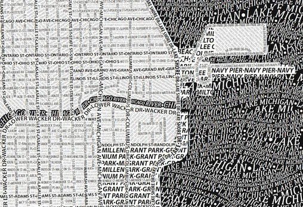
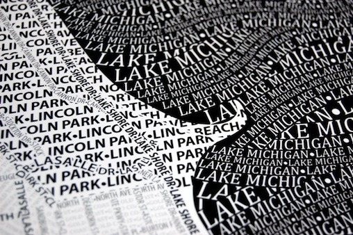
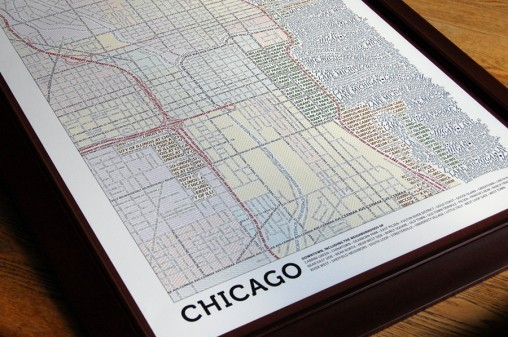

Mon, 22 Nov 2010 08:53:00 · typography · map · design · urban
cool urban typographic maps posters brought to you



Cool Urban Typographic Maps posters brought to you by AxisMap.
Une impressionnante réalisation, aussi minutieuse que soignée et cohérente pour ces excellentes cartes des villes de Chicago et de Boston qui ont la particularité de n’être composées que de lettres reprenant les noms de rues, des parcs, des places, des fleuves et autres monuments de la ville.
Réalisées manuellement par Axis Maps et proposées sous forme de posters, découvrez tous les détails en images dans la suite ici.